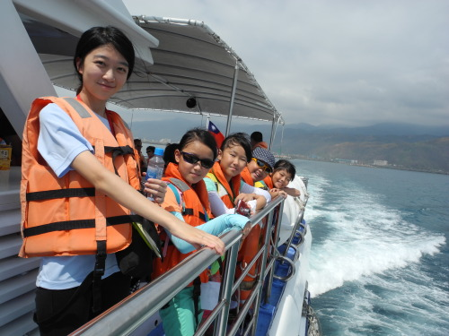
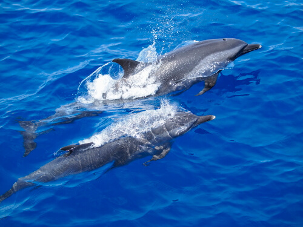
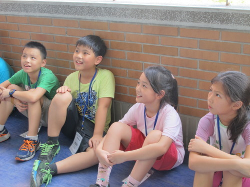
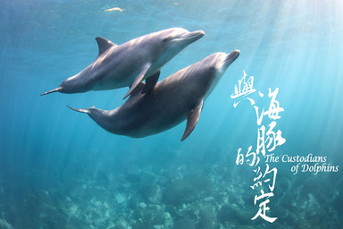
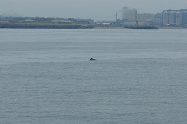
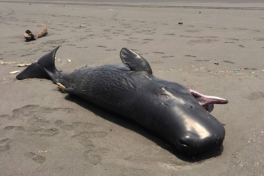

登入
註冊
購物

賞鯨活動

鯨豚擱淺處理

海洋保育活動
「中華鯨豚協會」(Taiwan Cetacean Society)成立於1998年10月17日。早期的台灣，對於鯨目動物的研究相當有限。直到1990年，澎湖屠殺海豚的事件國際上披露，引起保育聲浪之撻伐，此後台灣的鯨豚保育行動及生態研究才陸續展開。

老、中、青三位臺灣鯨豚學家，如何為鯨豚保育打拼? 還有導演簡毓群運用4K空拍及水下攝影的空間視角，揭露數種鯨豚首次被記錄到的生態行為。
閱讀更多

台灣西海岸居住著一群特別的白海豚，本來無人知曉，後來卻遇到重重難關。因國光石化要蓋在牠們生活的地方，白海豚才廣為人知。

遠在外太空的太陽風暴會使地球上的抹香鯨迷路嗎？
來自海洋的精靈
眨著深邃的眼睛
彷彿
超越了人與動物的界線
加入我們 >>> 鯨豚家族
瀏覽主題
訂閱電子報
我們將不定期提供最新資訊給您
聯絡我們
地 址：10673台北市大安區基隆路三段130號台大嚴慶齡工業研究中心 207室
電 話：(02)2933-2706
傳 真：(02)2933-2789
網 址：www.whale.org.tw
E-mail：tcs@whale.org.tw
加入我們的粉絲團
© 2020 中華鯨豚協會
首頁 / 協會介紹 / 組織架構 / 加入我們 / 擱淺處理 / 文章分享